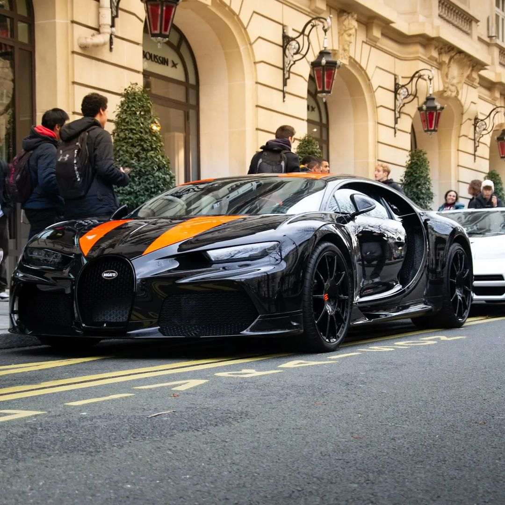
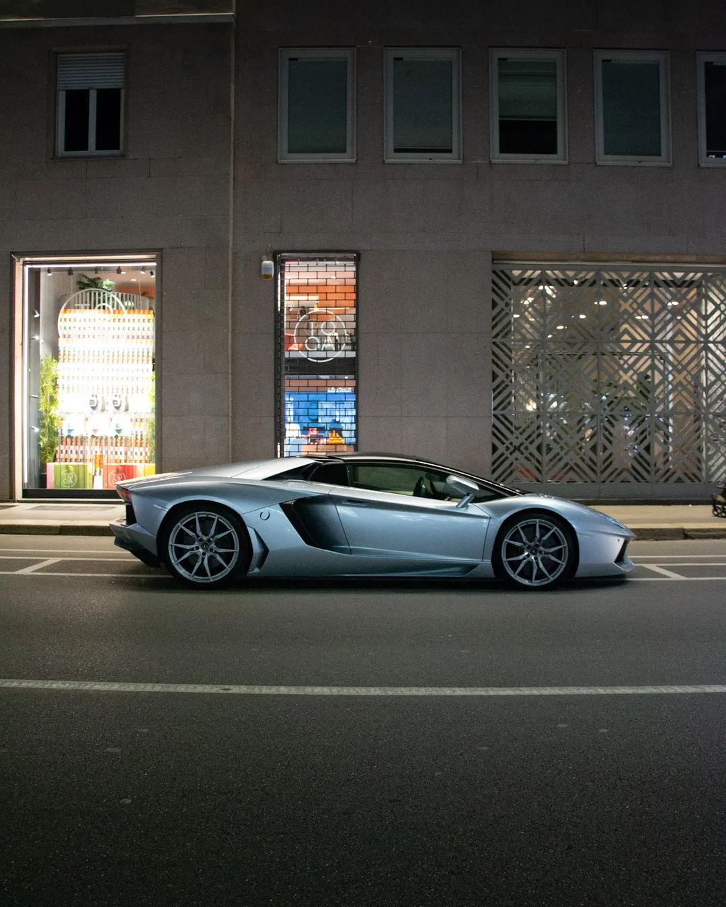

The Bugatti Chiron Super Sport 300+ is a high-performance sports car that is designed to deliver extreme speed, agility and luxury. With its sleek and aerodynamic body, it is capable of reaching top speeds of up to 304 mph, making it one of the fastest cars in the world. Its interior is equally impressive, with plush leather seating and high-end technology, including a cutting-edge infotainment system, driver assist features and a premium audio system. Powering this beast of a machine is a massive 8.0-liter quad-turbocharged W16 engine, producing a staggering 1,578 horsepower and 1,180 lb-ft of torque. The Bugatti Chiron Super Sport 300+ is a true masterpiece of engineering and design, built for the ultimate driving experience.

The Lamborghini Aventador is a high-performance luxury sports car produced by Italian automaker Lamborghini. It was first introduced in 2011 and is available as a coupe or roadster. It features a mid-engine, all-wheel drive layout powered by a 6.5-liter V12 engine producing 700 to 730 horsepower. The Aventador boasts aggressive, angular styling and is known for its sharp handling and extreme speed, with a top speed of over 217 mph. The interior is also luxurious, with high-end materials and cutting-edge technology.